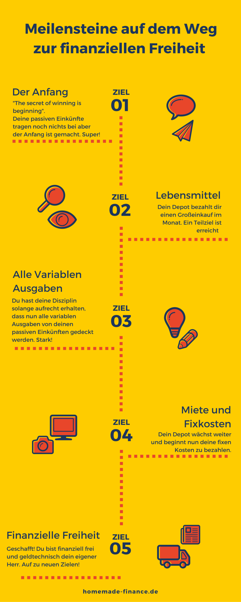

Welcome to Finanzielle freiheit
Finanzielle Freiheit - 1.250 Dividende allein in diesem Jahr
2020.12.03 11:55
Analysen Wissen Grundregeln des Börsenerfolgs Passives Einkommen mit Aktien-Sparplan – so legst du los Top-Aktien für deinen Sparplan Wie Kennzahlen uns in die Irre führen Von steigenden Kursen und Dividenden profitieren – so geht’s Unterbewertete Aktien kaufen Das KGV Komplott – Ist auch deine Aktienbewertung falsch? Tenbagger – 900% Kursgewinn für Investoren Aktienrückkäufe – der große Betrug? Pro & Contra Dividenden Der Fluch der Dividendenstrategie So vermeiden Sie eine Dividendenkürzung Alles über REITs REITS finden leicht gemacht Die Besteuerung ausländischer Einkünfte aus REITs So meisterst du jeden Börsencrash Videos Advents-Gewinnspiel Starterdepot Finanzhelden Analysen Wissen Grundregeln des Börsenerfolgs Unterbewertete Aktien kaufen Pro & Contra Dividenden Alles über REITs So meisterst du jeden Börsencrash Videos Advents-Gewinnspiel Starterdepot Finanzhelden Zum Aktienfinder
Amazon Aktie 8000 Prozent Kursgewinn! Jetzt noch ein Kauf?
November 14, 2020Das Corona-Crash-Radar Gewinner- und Verlierer-Aktien
November 19, 2020Finanzielle Freiheit als Unternehmer November 2020
Veröffentlicht von Felix Lohr am November 16, 2020Helden der finanziellen Freiheit
Finanzielle Freiheit als Unternehmer erfordert Ausdauer und die Kraft, auch bei Rückschlägen weiter zu machen. Den Beweis hierfür liefert Aaron, bekannter unter seinem YouTube Namen Homo Oeconomicus. Aarons unternehmerischer Werdegang verlief in den ersten Jahren alles andere als reibungslos. Was bei Aaron alles schief lief, bevor er aller Widrigkeiten zum Trotz schließlich doch erfolgreicher Unternehmer wurde, siehst du in unserem zweiteiligen Interview auf YouTube. Die 80 Minuten Einblick sind ebenso unterhaltsam wie lehrreich – auch für jene, die (noch) kein eigenes Business aufbauen wollen.
Finanzblogger im Interview: Aaron aka Homo Oeconomicus
Parallel zum T-Shirt-Business baut sich Aaron ein passives Einkommen aus Dividenden auf. Hierfür investiert er in dutzende Dividenden-Titel, die ihm langfristig steigende Dividenden bescheren. Im Januar 2018 erhielt Aaron zum ersten Mal Dividenden. Damals bescheidene 3,42 Euro. Keine drei Jahre später hat Aaron seine Dividendeneinnahmen vervielfacht. Sein bisheriger Rekordmonat ist der Juni 2020 mit 509,10 Euro Dividende. Aarons monatliche Depot-Updates findest du auf seinem YouTube-Kanal.
Dividendenhistorie von Homo Oeconomicus
Aarons Dividendenhistorie sowie die von über 30 weiteren Finanzbloggern siehst du in der interaktiven Auswertung der Helden der Finanziellen Freiheit .
Es folgt die monatliche Auswertung der in diesem Monat 32 teilnehmenden Finanzblogger aus allen Teilen der Welt auf Heller und Cent. Fangen wir stolz mit den Highlights an.
Heldentaten der Finanzblogger im Oktober
Im Oktober haben 33 Finanzblogger ihre Einnahmen mit uns geteilt. Das größte Depot des Vormonats hat sich bezüglich des Werts kaum verändert und liegt bei knapp 889.000€. DivGro führt damit weiterhin die Tabelle an. Das kleinste Depot liegt im Oktober bei 7.100€. Im Durchschnitt kassierte jeder Finanzblogger Dividenden in Höhe von 565 Euro. Die höchste Oktober-Dividende kassierte Dividendhawk aus Finnalnd mit 2.015 Euro, was einem ansehnlichen Monatsgehalt entspricht.
Die interaktive Auswertung der Helden der Finanziellen Freiheit findest du hier
.
Rekord-Dividenden im Oktober
Jahr für Jahr steigern hunderte von Qualitätsunternehmen die Dividende. Finanzblogger beteiligen sich an diesen Unternehmen und erhöhen so ihre Dividendeneinnahmen ebenfalls Jahr für Jahr. Gleichzeitig kaufen sie stets weitere Aktien nach. Entweder automatisiert über Aktien-Sparpläne oder über Einzelkäufe. Die logische Folge sind sich wiederholende Rekord-Dividenden sogar in Crashphasen. Im Oktober konnten sich folgende Finanzblogger über neue Rekord-Dividenden freuen:
Finanzblogger Land Dividenden Div. Down Under Australien 1321,18Finanzblogger investieren international in die besten Unternehmen weltweit. Und ebenso international sind die investierenden Finanzblogger rund um den Globus verteilt. In dieser Tabelle siehst du, woher die teilnehmenden Finanzblogger kommen und wie hoch die gesamten Einnahmen pro Land sind:
Dividenden und Optionen nach Land
Land Anzahl Blogger Summe Dividenden Durchschn. Dividenden Options Prämien Anzahl Stillhalter Deutschland 16 6282,22 392,64 3197 4 USA 8 5234,3 654,29 2281,59 1 Italien 3 1315,16 438,39 -1057 1 Kanada 1 279,58 279,58 0 0 Österreich 1 1533,31 1533,31 0 0 Ungarn 1 93,18 93,18 0 0 Australien 1 1321,18 1321,18 0 0 Finnland 1 2015,67 2015,67 0 0Top 10 Finanzblogger nach Einnahmen
Und nun auf zur monatlichen Einnahme-Parade der Finanzblogger aus der ganzen Welt – von denen zugegebenermaßen ziemlich viele aus Deutschland sind.
Einige Finanzblogger erzielen nicht nur Einnahmen aus Dividenden, sondern verkaufen zudem Aktien-Optionen. Der Verkauf von Aktien-Optionen ist zwar kein passives Einkommen und mit einem höheren Aufwand und Risiko verbunden, doch wenn es funktioniert, winken deutlich höhere monatliche Einnahmen als „nur“ durch Dividenden allein. Hier die Top 10 Finanzblogger nach den höchsten Gesamteinnahmen:
Top 10 Finanzblogger nach monatlichen Einnahmen
Top 10 Finanzblogger nach realisierter Rendite
Die Höhe der Einnahmen hängt insbesondere vom Depotwert ab. Je höher der Depotwert, desto leichter lassen sich hohe Einnahmen erzielen. Bezieht man jedoch die Einnahmen auf den Depotwert, so lässt sich eine Rendite berechnen, die unabhängig vom Depotwert ist. Hier also die 10 Finanzblogger mit der höchsten Rendite im letzten Monat:
Top 10 Finanzblogger nach der erzielten Rendite des letzten Monats
Top 10 Finanzblogger nach stabilem Zuwachs
Die monatlichen Einnahmen sind ein motivierender Schritt auf dem langen Weg zur Finanziellen Freiheit. Ebenfalls wichtig jedoch sind nachhaltig wachsende Einnahmen. Deshalb wird bei dieser Auswertung auf ein möglichst zuverlässiges Wachstum der Einnahmen über die letzten 12 Monate geachtet. Die Größe des Depots spielt auch hier keine Rolle.
Die Stabilität der Einnahmen wird über eine Zahl von +1 bis -1 ausgedrückt. Schwanken die Einnahmen stark, tendiert die Stabilität gegen 0. Sind sie rückläufig, so wird die Stabilität negativ und steigen die Einnahmen wie erhofft, positiv. Und hier die Top 10 Blogger mit der höchsten Einnahmestabilität:
Top 10 Finanzblogger mit dem stabilsten Wachstum
Da die Einnahmen aus Dividenden besser planbar sind als Einnahmen über Optionsprämien, sind reine Dividendendepots hier klar im Vorteil.
Top 10 Finanzblogger nach Zuwachs im 12-Monats-Vergleich
Um die finanzielle Freiheit zu erreichen, sollte das Einkommen nicht nur stabil wachsen, sondern auch möglichst dynamisch. Deshalb werden hier die Einnahmen der letzten 12 Monate mit den Einnahmen der vorherigen 12-Monats-Periode verglichen. Diese Auswertung ist sozusagen die Königs-Disziplin und entsprechend auf vielen Finanzblogs anzutreffen.
Und hier die Finanzblogger mit den höchsten Zuwächsen im 12-Monats-Vergleich:
Top 10 Finanzblogger mit dem höchsten 12-Monats-Wachstum
Kleinere Depots können die Dividenden innerhalb eines Jahres prozentual leichter steigern. Diese Tatsache motiviert gerade am Anfang ungemein. Es macht einfach Spaß, seine Dividenden um Prozente wachsen zu sehen, die mit gewöhnlichen Arbeitseinkommen kaum erreichbar sind.
Fazit: Steigende Dividenden sind für jeden machbar
Um von steigenden Dividenden zu profitieren, muss man nicht zwangsläufig Unternehmer sein. Auch im Angestelltenverhältnis kannst du einen monatlichen Betrag beiseite legen und investieren. Aktien-Sparpläne sind für den Einstieg eine gute Wahl. Das kostenlose Starterpaket erleichtert dir diesen Einstieg. Hier ist alles enthalten, was du für den Aufbau eines passiven Einkommens aus Dividenden benötigst. Eine kostenlose Vollmitgliedschaft im beliebtesten Aktienfinder Deutschlands inklusive.
Felix Lohr
Freischaffender Freigeist in Finanzdingen wie der Finanziellen Freiheit durch Dividenden.Ähnliche Artikel
Dezember 1, 2020Intel Aktie Der Riese wankt
Jetzt lesen November 30, 2020Der Aktienfinder-Adventskalender 72 x Aktienfinder kostenlos
Jetzt lesen November 28, 2020CD Projekt Aktie – Ein Zock für Hartgesottene
Jetzt lesen2 Comments
Götz sagt: November 16, 2020 um 4:17 pm UhrHallo Felix/Torsten,
im Text hat sich ein kleiner Fehler eingeschlichen: „Im April konnten sich folgende Finanzblogger über neue Rekord-Dividenden freuen“.
Und meine Dividenden-Einnahmen ( https://www.finanzblognews.de/finanzblog-news-dividenden/ ) im Oktober habt Ihr diesmal auf der Heldenseite vergessen.
Viele Grüße
Götz
Hi Götz!
danke für den gemeldeten April. Ist behoben! Und du bist jetzt dabei!
Sorry für das Vergessen und lieben Gruß!
Torsten
AntwortenSchreibe einen Kommentar Antworten abbrechen
Haftungsausschluß
Der Handel mit Wertpapieren kann zu Verlusten, bis hin zum Totalverlust, führen. Aktienfinder.Net sowie die hier veröffentlichenden Autoren geben keine Kaufempfehlung ab. Siehe auch Haftungsausschluß .
1.000+ Aktienanalysen für 0 € / Monat
Helden der Finanziellen Freiheit
Neueste Kommentare
Torsten Tiedt bei CD Projekt Aktie – Ein Zock für Hartgesottene Torsten Tiedt bei Aktienrückkäufe – der große Betrug? Klaus Deschner bei Der Aktienfinder-Adventskalender 72 x Aktienfinder kostenlos Rainer E. bei Aktienrückkäufe – der große Betrug? Ein Gamer bei CD Projekt Aktie – Ein Zock für Hartgesottene Torsten Tiedt bei CD Projekt Aktie – Ein Zock für Hartgesottene Torsten Tiedt bei Der Aktienfinder-Adventskalender 72 x Aktienfinder kostenlos Patrick Schirmer bei Der Aktienfinder-Adventskalender 72 x Aktienfinder kostenlos Ein Gamer bei CD Projekt Aktie – Ein Zock für Hartgesottene Ersom bei Der Aktienfinder-Adventskalender 72 x Aktienfinder kostenlos Lukas bei CD Projekt Aktie – Ein Zock für Hartgesottene finanzfunk bei Intel Aktie Der Riese wankt Intel Aktie - Der Riese wankt bei Qualcomm Aktie – Eine 😢 Soap mit 😲Happy End 😁 Top 50 Dividenden-Aktien für einen Kauf – Qualitätsauslese Herbst 2020 bei BASF Aktie – Unsichere Dividende bei fehlender Kursfantasie? Top 50 Dividenden-Aktien für einen Kauf – Qualitätsauslese Herbst 2020 bei LVMH Luxus Aktie für dein Depot? Top 50 Dividenden-Aktien für einen Kauf – Qualitätsauslese Herbst 2020 bei Tencent Aktie – China-Kracher für dein Depot? Top 50 Dividenden-Aktien für einen Kauf – Qualitätsauslese Herbst 2020 bei Visa Darum ist die Aktie ein Kauf Intel Aktie - Der Riese wankt bei Nvidia Aktie – Kauft Mr. Market noch rational? Intel Aktie - Der Riese wankt bei AMD Aktie kaufen Sternschnuppe oder Superstar? Torsten Tiedt bei CD Projekt Aktie – Ein Zock für Hartgesottene Über uns / Impressum Datenschutzerklärung Haftungsausschluß Zum AktienfinderSchon fast da!
Dein Broker inklusive 90 Tage Vollmitgliedschaft
Für die Vergabe deiner Vollmitgliedschaft nach der Depoteröffnung benötigen wir bitte noch deine E-Mail-Adresse. Eine andere Verwendung, beispielsweise für Marketingzwecke, erfolgt weder durch Aktienfinder.Net noch durch Dritte.
Hinweis :
Die Gutschrift der 90 Tage Vollmitgliedschaft geschieht automatisch nach Bestätigung der Depoteröffnung. Bei mehrwöchiger Verzögerung oder sonstigen Fragen schicke uns bitte eine Mail an aktienfinder@aktienfinder.net . Nachfragen beim Broker führen zu nichts, weil die Vollmitgliedschaft ein Bonus von uns ist und unabhängig vom jeweiligen Broker erfolgt.
Zur Depot-Eröffnung
Zurück Wir verwenden auf unserer Website Cookies, um Ihnen den Aufenthalt auf dem Aktienfinder-Blog möglichst komfortabel zu gestalten, indem wir Ihre Einstellungen speichern und bei wiederholtem Besuch anwenden. Mit dem Klick auf "Akzeptieren" erklären Sie sich mit der Verwendung ALLER Cookies einverstanden. Sie können jedoch die Cookie-Einstellungen besuchen, um nur eine teilweise Zustimmung zu erteilen. Cookie Einstellungen Einverstanden Cookie-Einstellungen SchließenCookie-Einstellungen und Verwendung
Der Aktienfinder Blog verwendet Cookies, um dessen Funktionalität sicherzustellen, dessen Nutzung zu analyiseren sowie ihren Benutzerkomfort zu erhöhen. Jedes Cookie ist einer Kategorie zugeordnet inklusive einer Beschreibung, die Ihnen hilft zu verstehen, wofür das Cookie verwendet wird. Sie haben die Möglichkeit, nicht unbedingt notwendige Cookies abzulehnen, was in diesem Fall zu einem schlechteren Verhalten der Webseite führen kann. Weitere Informationen finden Sie im Datenschutz . Notwendig Notwendig Immer aktiviert Cookie Typ Dauer Beschreibung __cfduid 1 11 Monate Dieses Cookie wird von CloudFare gesetzt. Das Cookie wird verwendet, um einzelne Clients hinter einer gemeinsamen IP-Adresse zu identifizieren und Sicherheitseinstellungen pro Client anzuwenden. Sie entspricht keiner Benutzer-ID in der Webanwendung und speichert keine personenbezogenen Daten. cookielawinfo-checkbox-analytics 0 11 Monate Dieses Cookie wird vom GDPR Cookie Consent Plugin gesetzt. Mit diesem Cookie soll überprüft werden, ob der Nutzer unter der Kategorie " Analytics" die Zustimmung zur Verwendung von Cookies erteilt hat oder nicht. cookielawinfo-checkbox-necessary 0 11 Monate Dieses Cookie wird vom GDPR Cookie Consent Plugin gesetzt. Mit diesem Cookie soll überprüft werden, ob der Nutzer unter der Kategorie " Notwendig " die Zustimmung zur Verwendung von Cookies erteilt hat oder nicht. viewed_cookie_policy 0 1 Stunde Dieses Cookie wird vom GDPR Cookie Consent Plugin gesetzt und dient dazu, zu speichern, ob der Benutzer der Verwendung von Cookies zugestimmt hat oder nicht. Es werden keine personenbezogenen Daten gespeichert. Für das GDPR Cookie Consent Plugin werden noch weitere Sub-Cookies benutzt, um ihren individuellen Cookie-Einstellungen zu speichern. Analytics analytics Cookie Typ Dauer Beschreibung __stid 0 1 year Dieses Cookie wird von ShareThis gesetzt. Das Cookie wird für die Website-Analyse verwendet, um die besuchten Seiten, den Zeitaufwand usw. zu ermitteln. __stidv 0 1 year Dieses Cookie wird von ShareThis gesetzt. _ga 0 2 Jahre Dieses Cookie wird von Google Analytics installiert. Das Cookie wird verwendet, um Besucher-, Sitzungs- und Kampagnendaten zu berechnen und die Nutzung der Website für den Analysebericht der Website zu verfolgen. Die Cookies speichern Informationen anonym und arbeiten mit einer zufällig generierten Nummer, um einen Besucher zu identifizieren. _gat 0 1 Minute Diese Cookies werden von Google Universal Analytics installiert, um die Anzahl der Anfragen zu reduzieren und die Erfassung von Daten auf stark frequentierten Webseiten zu begrenzen. _gat_gtag_UA_90022463_2 0 1 Minute Google nutzt dieses Cookie um Benutzer zu unterscheiden. _gid 0 1 Tag Dieses Cookie wird von Google Analytics installiert. Das Cookie wird verwendet, um Informationen darüber zu speichern, wie Besucher eine Website nutzen, und hilft bei der Erstellung eines Analyseberichts darüber, wie die Website verwendet wird. Die erhobenen Daten umfassen die Anzahl der Besucher, woher diese kommen und welche Seiten besucht wurden. Die Daten werden in anonymisierter Form erhoben. GPS 0 30 minutes Dieses Cookie wird von Youtube gesetzt und registriert eine eindeutige ID zur Nachverfolgung von Benutzern auf der Grundlage ihrer geografischen Lage. IDE 1 2 years Wird von Google DoubleClick verwendet und speichert Informationen darüber, wie der Benutzer die Website und jede andere Werbung vor dem Besuch der Website nutzt. Dies wird verwendet, um Nutzern Anzeigen zu präsentieren, die gemäß dem Nutzerprofil für sie relevant sind. YouTube youtube Cookie Typ Dauer Beschreibung VISITOR_INFO1_LIVE 1 5 months Dieses Cookie wird von Youtube gesetzt und wird verwendet, um die Informationen der eingebetteten YouTube-Videos auf einer Website zu verfolgen. Ohne dieses Cookie können Sie keine YouTube-Videos auf dem Blog sehen. YSC 1 Dieses Cookie wird von Youtube gesetzt und dient dazu, die Aufrufe von eingebetteten Videos zu erfassen. Speichern und akzeptieren